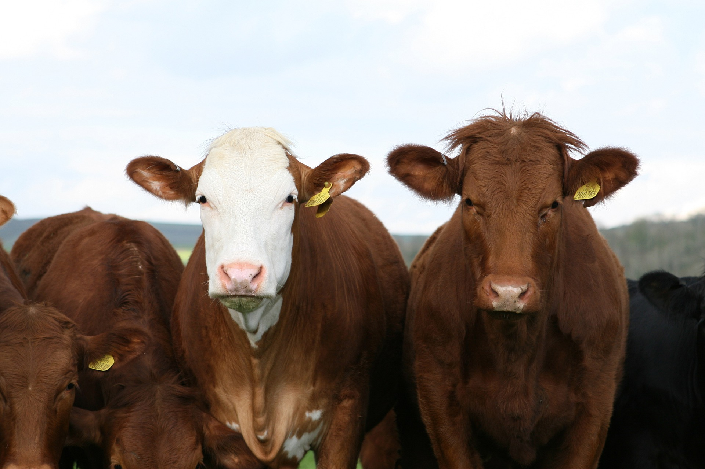

Envío de 1 a 2 días hábiles una vez sea procesado tu pago
Nuestra Carne
La alimentación y cuidado de nuestras reses es primordial para lograr la máxima calidad y marmoleo en nuestra carne. La categoría A5 es el grado más alto en la clasificación Wagyu.
